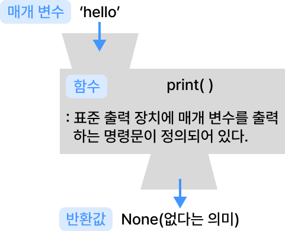

개념 학습
표준 출력 함수
표준 출력을 위해 print( ) 함수를 사용한다. 여러 개의 값을 출력하고 싶다면 ‘ , ’(콤마)로 구분하여 나열하고, 한 줄을 출력한 후 다음 출력은 새로운 줄에서 시작한다.
표준 출력 프로그램 예시
함수(function)
함수란 특정한 기능을 수행하는 명령어들을 하나로 묶어서 이름을 붙인 명령어의 집합이다. 함수는 함수명, 특정 기능에 필요한 값을 입력받는 변수인 매개 변수, 정의된 기능을 수행하는 명령문, 수행 결과를 되돌려주는 반환값으로 구성된다.
